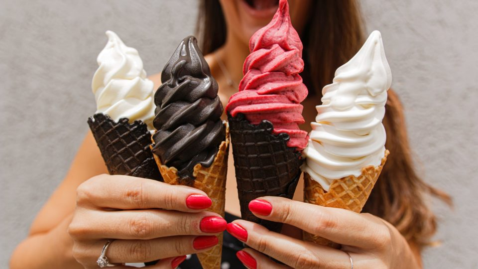

Sobre nós
Somos uma empresa apaixonada pela arte de transformar ingredientes simples em momentos de pura felicidade. Desde a nossa fundação, buscamos redefinir o conceito de sorvete, combinando técnicas tradicionais com uma abordagem inovadora, para criar sabores que encantam e inspiram. Nosso compromisso com a qualidade é inegociável. Selecionamos cuidadosamente os melhores ingredientes, priorizando produtos naturais e sustentáveis sempre que possível. Cada sorvete é elaborado artesanalmente, com atenção meticulosa aos detalhes, garantindo uma experiência única em cada colherada.
Missão
Na GranGelato, valorizamos não apenas o sabor excepcional dos nossos produtos, mas também os momentos que eles proporcionam. Acreditamos que o sorvete vai além de uma simples sobremesa; é uma expressão de alegria, um convite para celebrar os pequenos prazeres da vida. Além disso, estamos comprometidos em ser uma empresa consciente e responsável. Buscamos constantemente maneiras de minimizar nosso impacto no meio ambiente, desde a escolha de fornecedores locais até a adoção de práticas sustentáveis em nossa produção
Equipe
Savio Barbosa Freitas
Taynara Carlos Ferraz

Luan Santana
Chitãozinho do Xororó